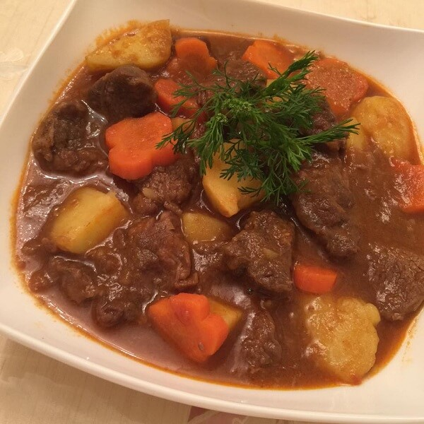

Beef Staw instant pot

Description
Delicious and easy to make beef stew using instant pot
Ingredients
- Beef shank
- Carrot
- Potato
- Chinese 5-spice
- Ginger, shallot, garlic
Steps
- Use saute mode of instant pot to saute ginger, shallot, garlic
- Put beef and spice in
- Set Instant pot to manual in 25 minutes
- Peel Carrot and Potatoes, cut into bite size
- When instant pot finish pressure cooking, vent it then put carrot and Potatoes into pot
- Change pot to saute, continue to cook for 15 minutes